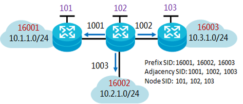
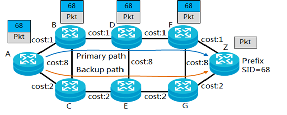
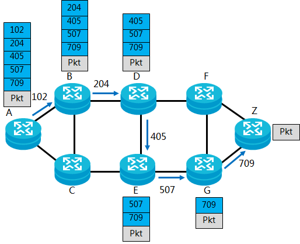
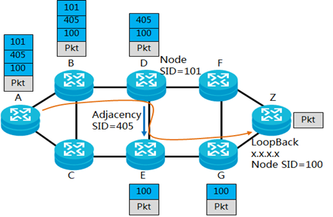

Um Mundo mais conectado e novos desafios
Nas últimas décadas observamos o surgimento de diversas novas tecnologias que vem se popularizando cada vez mais em nosso cotidiano, como o 5G, Internet das coisas (IoT), Inteligência Artificial (IA), entre outras. E com elas, tais tecnologias trazem consigo novas necessidades como a demanda de uma maior capacidade de computação, visto que a borda da rede está crescendo continuamente. Tal crescimento vem aumentando a pressão sobre a conectividade IP e os protocolos que gerem a internet atualmente. Essa pressão exige a criação de novas soluções e implementações para lidar com os novos desafios da rede.

Nas redes IP tradicionais, decisões de encaminhamento de pacotes são realizadas salto-por-salto (hop-by-hop) com roteadores que realizam pesquisas de rota a cada nó. Essas redes IP usam IGP (Interior Gateway Protocol), que são construídos para tomar decisões de encaminhamento de pacotes com base em um custo de caminho atribuído especificado. Os pacotes com origem e/ou destino semelhantes seguirão a mesma rota, resultando em congestionamento, mesmo se os caminhos opcionais estiverem subutilizados ou até mesmo ociosos
Tentando resolver esse problema, o TE (Traffic Engineering) foi introduzido e, em vez de as decisões de encaminhamento serem tomadas em uma base hop-by-hop, os roteadores de entrada determinam o caminho da origem até destino para cada fluxo de tráfego específico. Dessa forma, o tráfego que tomaria um caminho de baixo custo, porém congestionado, agora pode ser direcionado para rotas subutilizadas. Em outras palavras, executa o "balanceamento de carga" de tráfego.
O RSVP (Resource Reservation Protocol, ou protocolo para reserva de recursos de rede) também foi introduzido para reservar recursos fim a fim ao longo do caminho de fluxo de tráfego em uma rede IP. O protocolo de sinalização RSVP foi ampliado com recursos MPLS (Multi-Protocol Label Switch) para admitir MPLS-TE, permitindo que o RSVP configure uma rota de rede utilizando rótulo. LSP (Label Switched Path), em uma rede MPLS-TE com extensão RSVP-TE.
A tecnologia preferida atualmente para que as operadoras de rede desenhem e implantem redes MPLS com engenharia de tráfego é o RSVP-TE. O problema é que O LDP (Label Distribution Protocol), e especificamente o RSVP-TE, são protocolos complicados para implementar, manter, operar e solucionar problemas quando as coisas dão errado. Eles geram muita sinalização na rede, têm uma visão limitada da topologia da rede e inundam a rede com túneis MPLS.
As operadoras de rede, portanto, necessitam de uma equipe de operações altamente qualificada para suportar arquiteturas de rede RSVP-TE. E escalar redes RSVP-TE pode rapidamente se tornar uma tarefa difícil e algumas vezes inviável.
O que é Segment Routing?
Segment Routing (SR) ou roteamento por segmento, é uma tecnologia moderna de roteamento de origem que vem sendo desenvolvida por grupos de trabalho do SPRING e IPv6 do IETF. Essa arquitetura de roteamento de origem, traz um grande avanço na simplificação da rede IP, e é uma maneira mais flexível e escalável de fazer roteamento de origem (“anexar figura”). Onde um nó de ingresso (fonte) escolhe um caminho, ou seja, uma lista ordenada de segmentos, e anexa no cabeçalho do pacote. Os nós subsequentes na rede executam as instruções codificadas. Por exemplo, instruções de encaminhamento: encaminhar um pacote a um destino ou interface específica. Essa forma de encaminhamento de pacotes é uma tecnologia nova que vem agregar benefícios às redes IP/MPLS, IPv6, etc. Como veremos na seção "Como funciona".
Sintetizando:
- SR é um protocolo de roteamento suportado por aplicação de Redes definidas por Software para a definição de caminhos de forma eficiente e automatizada;
- SR é um protocolo de roteamento pela origem. Ou seja, a origem codifica no cabeçalho do pacote a lista de segmentos a serem percorridos pelos pacotes até o destino;
- SR não necessita da manutenção de estados por fluxo dentro da rede, reduzindo a complexidade dos planos de controle e dados;
- SR permite a configuração, a modificação e a remoção de caminhos TE dentro de um domínio de rede, operando somente na borda da rede. TE - Engenharia de tráfego é um exemplo de aplicação dentro do contexto de roteamento por segmentos;
- O plano de controle de roteamento por segmentos pode ser mantido de forma centralizada ou distribuída.
Segmento:
- É um identificador genérico para qualquer tipo de instrução: um serviço, contexto, localizador ou um caminho baseado no IGP ou no BGP;
- É identificado pelo ID do segmento (SID) que consiste em um inteiro de 32 bits sem sinal;
SID (Segment Routing Identifier): É o identificador de segmento, em redes MPLS, o SID é um rótulo MPLS. A cadeia de SIDs é chamada de caminhos de roteamento por segmentos (segmente Routing – SR path); - É representado por um índice local ou global. Por exemplo: uma lista de segmentos para a rede de roteadores de núcleo IP/MPLS é representada por uma pilha de rótulos (Label stack), enquanto no IPV6 é representada pela extensão do cabeçalho para roteamento.
Tipos de segmentos:
- Segmentos de Nó: possui numeração única e global, o prefixo SID, retirado do SRGB (Segment Routing Global Block);
- Segmentos de Adjacência: possui significado local e está relacionado a uma ou mais adjacências do nó;
- Segmento Local: suportado apenas no nó que foi gerado, nenhum outro nó pode instalar este SID em sua FIB.
Classificação dos segmentos:
| Marcação | Método de Marcação | Função |
|---|---|---|
| Segmento de prefixo | Manualmente configurado | Identifica o prefixo do endereço de destino. Um protocolo IGP propaga o segmento de prefixo de um NE para demais NEs. O segmento de prefixo é visível e se torna globalmente conhecido. Cada segmento de prefixo é identificado por um SID de prefixo. Um SID de prefixo é definido em um intervalo de valores SRGB e é anunciado pelo nó de origem. O terminal que recebe utiliza o SRGB local para calcular os valores da marcação e, em seguida, gera entradas de encaminhamento MPLS. |
| Segmento adjacente | Alocado dinamicamente através do protocolo utilizado para ingresso ou manualmente configurado. | Identifica uma adjacência em uma rede. Um protocolo IGP propaga o segmento adjacente de um NE para demais NEs. A adjacência é visualizada globalmente, mas tem efeito apenas localmente. Cada segmento adjacente é identificado por um SID de adjacência. O SID de adjacência é uma marcação local que está fora do intervalo utilizado no intervalo SRGB. |
| Segmento de nó | Manualmente configurado. | Identifica um nó específico. Segmentos de nós são prefixos de segmento especiais. Quando um endereço de IP é configurado como um prefixo para uma interface de loopback de um nó, o SID prefixo é o SID nó. |
Exemplo: SID de prefixos, adjacências e nós. 
Em geral, um segmento de prefixo indica um endereço de destino, e um segmento de adjacência indica um caminho para a saída dos pacotes de dados. Os segmentos de prefixo e adjacência são similares ao endereço de IP de destino e o próximo salto do IP convencional, respectivamente. Em uma área IGP, um NE propaga o SID do nó e o SID do segmento adjacente através de mensagens IGP, então qualquer NE na área pode obter informações sobre outros NEs. A combinação dos SIDs de prefixo e adjacências em sequência pode construir qualquer caminho de rede. Todo salto em um caminho identifica o próximo salto, o qual é baseado nas informações de segmentos da parte superior da pilha de rótulos. As informações do segmento são empilhadas em sequência no topo do cabeçalho. Se o SID receptor identifica outro nó ele direciona o pacote recebido para o nó de destino utilizando ECMP. Se o SID receptor identifica o nó local ele receptor remove o SID do topo da lista e executa o seguinte procedimento.
Segmentos de prefixo, adjacência e nós podem ser usados de forma ou independentemente ou em combinação. Geralmente são usados da seguinte forma: Modo baseado no segmento de prefixo: Um protocolo IGP utiliza o algoritmo Shortest Path First (SPF) para computar o caminho mais curto. Essa forma também é chamada de Segment Routing-Best Effort (SR-BE). Como mostrado na figura, o nó Z está conectado à rede de destino utilizando o SID 68. Depois do protocolo IGP propagar o SID de prefixo, cada nó na área do IGP aprende esse SID da rede Z e então executa o SPF para computar o caminho mais curto para àquela rede.  Modo baseado no segmento de adjacência: Como mostrado na figura, um segmento de adjacência é alocado para cada adjacência na rede, e uma lista de segmentos com múltiplos segmentos de adjacência é definido ao se realizar o ingresso na rede, dessa forma qualquer caminho pode ser explicitamente especificado. Esse modo é geralmente utilizado para implementação do Segment Routing-Traffic Engineering (SR-TE).  Modo no qual adjacências e nós são combinados: Como mostrado na figura, segmentos de adjacência e nós são combinados, e o segmento de adjacência permite forçar um caminho específico apenas incluindo adjacências na lista. Nós podem executar SPF para computar o menor caminho baseado nos segmentos de nós ou estabelecer múltiplos caminhos para realizar balanceamento de carga. Os caminhos definidos neste modo não são estritamente fixos, portanto, eles também são chamados de Loose Explicit Paths. Esse modo é geralmente usado para SR-TE (Segment Routing-Traffic Engineering). 
Tipos de instruções:
- Ir para o nó N usando o caminho mais curto;
- Vá para o nó N no caminho mais curto para o nó M e depois siga os links Camada 1, Camada 2 e Camada 3;
- Aplicar serviço S.
Com essa forma de roteamento de segmento, a rede não precisa mais manter um estado por aplicação e por fluxo, reduzindo estados, pesquisas, etc. Em vez disso, ele obedece as instruções de encaminhamento fornecidas no pacote. Dessa forma ajudando os operadores da rede a evitarem o congestionamento de tráfego e também direcionando os nós por outros caminhos de acordo com os requisitos ou estado que se encontra a rede.
Apesar de já ser possível perceber algumas das vantagens que um sistema como este pode nos proporcionar, é necessário formalizá-las. Para tal, vamos observar cada característica de um sistema SR e tentar identificar suas implicações.
Características e seus Benefícios
O website mantido pela Cisco Systems entitulado "https://www.segment-routing.net/" cita diversas características referentes ao Segment Routing (SR). Ao analisarmos cada uma delas, podemos extrair seus benefícios:
- Simples: O roteamento de segmento fornece controle total sobre os caminhos de encaminhamento combinando instruções simples de rede. Não requer nenhum protocolo adicional. De fato, em alguns casos, ele remove protocolos desnecessários que simplificam sua rede;
- escalabilidade: o roteamento de segmento não requer nenhuma sinalização de caminho. Portanto, o estado por fluxo só precisa ser mantido no nó de ingresso do domínio SR, aumentando a flexibilidade da sua rede enquanto reduz o custo;
- Engenharia de tráfego (TE-Traffic Engineering): o roteamento de segmento pode ser usado para direcionar o tráfego ao longo de qualquer caminho arbitrário na rede. Isso permite que os operadores imponham caminhos de baixa latência e / ou disjuntos, independentemente dos caminhos normais de encaminhamento. O SR consegue isso sem qualquer sinalização adicional ou ponto médio do estado da malha;
- Implantação sem emenda: O roteamento de segmentos é executado nativamente em um plano de dados MPLS ou IPv6. Uma simples atualização de software permitirá que seu hardware o execute. Além disso, o roteamento de segmentos pode coexistir com a rede LDP existente, tornando a migração indolor;
Apesar da lista de características e benefícios desse protocolo de roteamento (SR) ser bastante extensa, logo começam a ficar claros os desafios que acabam surgindo junto com sua implementação. Tendo em mãos definições um pouco mais formais, podemos começar a entender como funciona o rotemaneto por segmento.